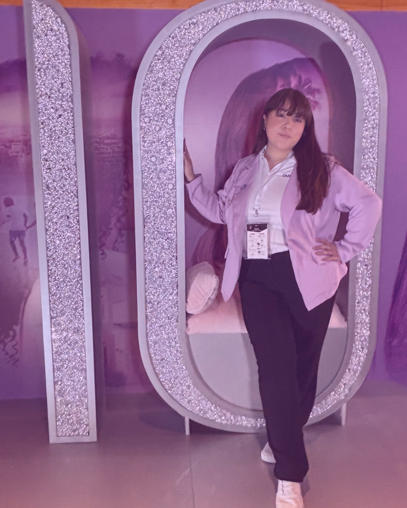
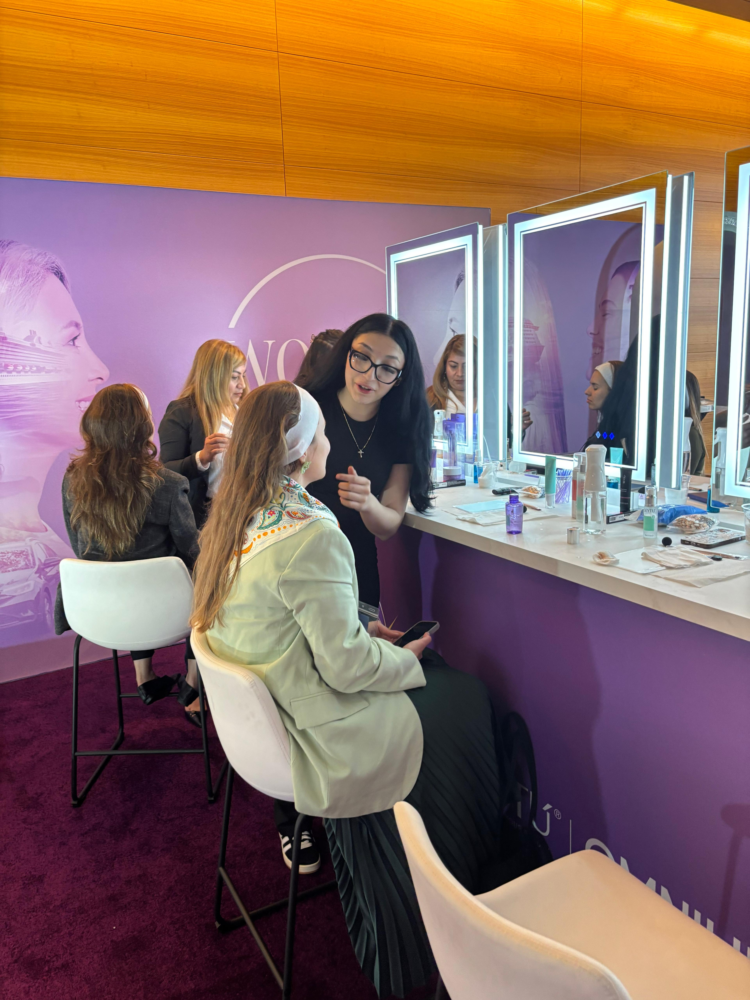
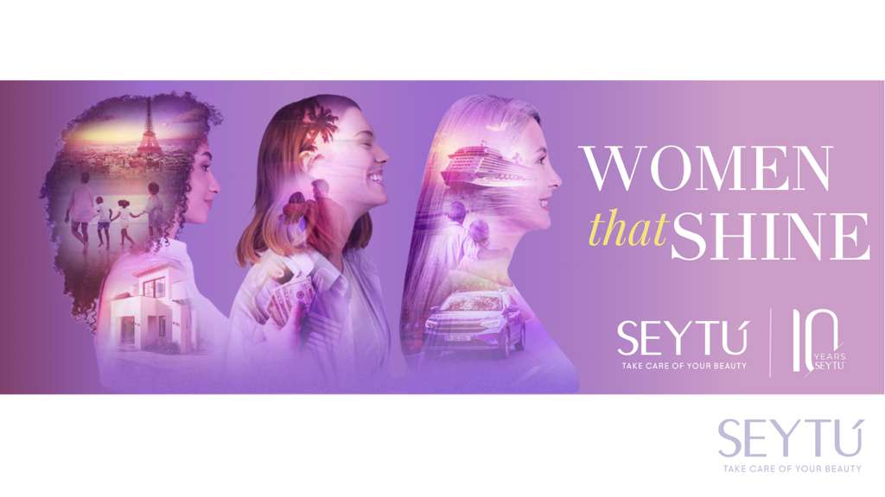
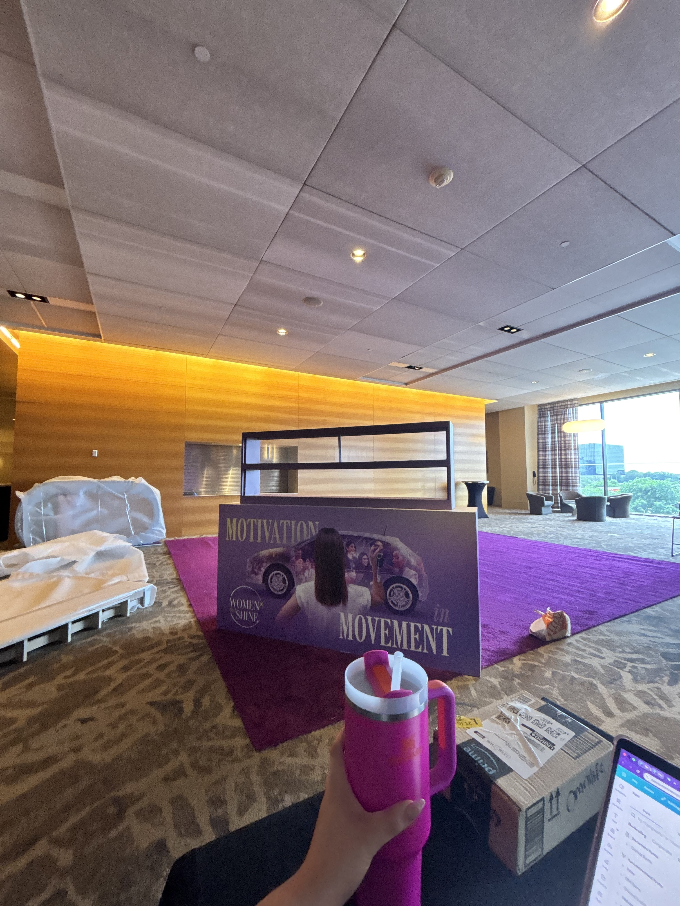
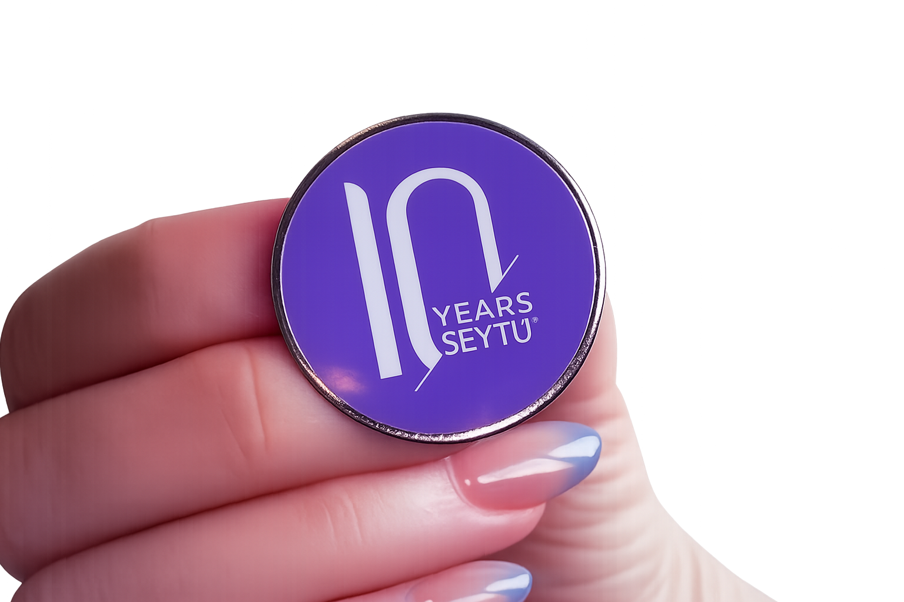
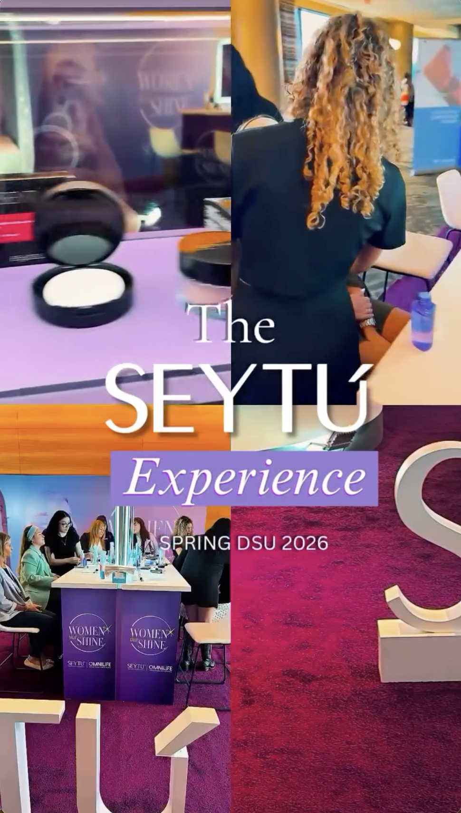
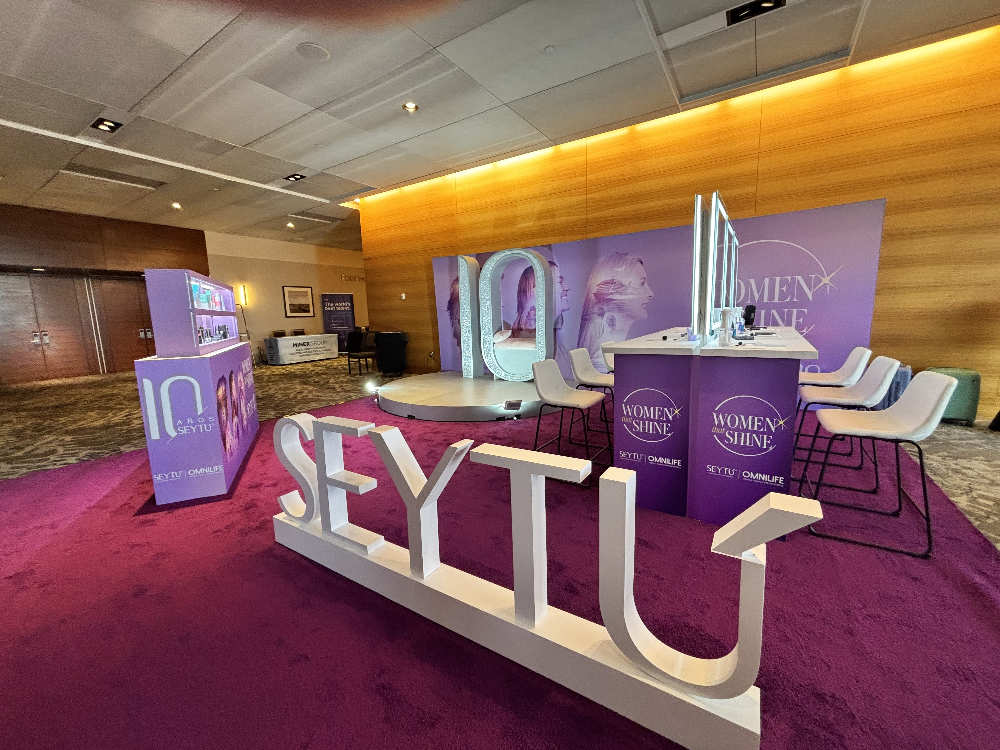

CASE STUDY / 04
Seytú Brand Activation
at the DSN Spring Event
An interactive beauty brand activation designed to increase Seytú’s visibility, encourage product discovery, and create personalized connections with attendees at the DSN Spring event in Dallas.
Marketing Coordinator and Brand Activation Lead
Create a premium and engaging brand experience that encouraged attendees to explore the product line and connect with the brand.
Personalized mini skincare and makeup sessions in a branded Seytú environment.

Professional presence
at brand moments.
This visual highlights my role supporting the event environment, representing the brand professionally, and helping bring the activation experience to life for attendees.
A guided experience
built for flow.
minute guided skincare and makeup experience
hour activation window planned for the DSN Spring event
beauty stations planned for attendee appointments
target appointment goal for attendee beauty sessions
My responsibilities
- Developed the structure for a guided 20-to-25-minute skincare and makeup experience.
- Planned a two-hour activation featuring six beauty stations with a target of 150 attendee appointments.
- Coordinated the event layout, measurements, setup schedule, installation responsibilities, and vendor logistics.
- Partnered with Logo Factory on the branded activation space and visual mockup.
- Coordinated branded materials, including Seytú pins, stickers, sample bags, signage, and promotional assets.
- Helped develop the attendee registration process, appointment rotations, and beauty preference intake questions.
- Adapted and executed bilingual social media, SMS, and event promotional messaging for the U.S. market.
- Coordinated communication between internal leadership, beauty professionals, vendors, and event organizers.
Guests registered for a time slot and completed a short survey to identify skin type, beauty goals, and makeup preferences for targeted product recommendations.
Beauty preferences were reviewed before the session so the experience could feel more personal and relevant.
Attendees received a guided mini skincare and makeup session with Seytú products.
Products were introduced through hands-on education instead of a traditional display-only format.
The experience helped create a stronger connection between attendees and the Seytú brand.
Activation visuals
from planning to execution.





